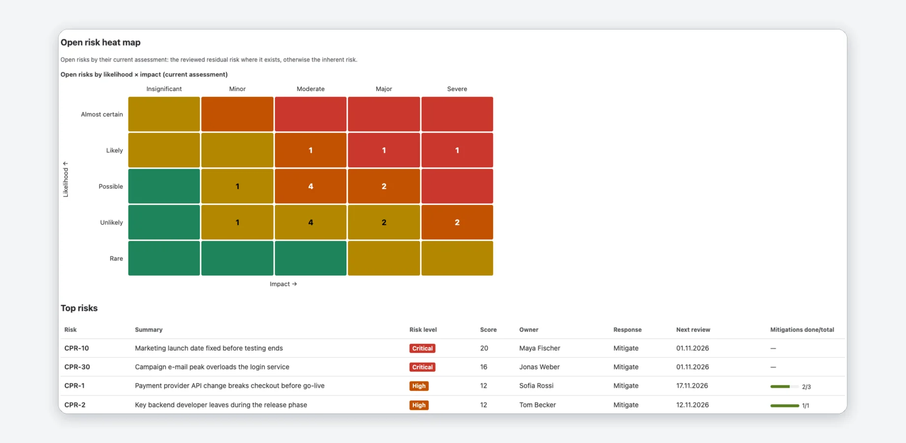

Riskcadence for Jira — Documentation
A risk register in Jira: risks as work items, a configurable risk matrix, reviews with an audit trail and a steering report for Jira and Confluence, and dashboard widgets for the heat map and the review inbox.
Getting started
- Open the Riskcadence page of your Jira project, in the project's sidebar.
- Choose a risk matrix and click Set up project. A Jira admin does this in one click in company-managed projects; in team-managed projects a project admin works through a short checklist (details). Tick Add 6 example risks to try Riskcadence if you want sample data.
- Add your risks: type them into the register, bring a spreadsheet in with the Import tab (details), or keep the example risks.
- Assess a risk: pick likelihood and impact in the register, or click a cell of the matrix in the Risk assessment panel of the work item.
- Hold your first review: Review → Sessions → Start review, decide on each risk and click Close review… (details).
- Share the result: the Report tab, a Riskcadence risk report macro on a Confluence page (details), or the risk matrix on a Jira dashboard (details).
In the app, a short Welcome to Riskcadence explains how it works in four ideas: risks live in Jira, you assess them on your matrix, you review them regularly and you report what changed. It appears on the setup page and on your first visit, and the Getting started checklist ticks these steps from your data. Every tab has a Help link to the matching section of this documentation.
On this page
What it does
Riskcadence for Jira keeps the risk register in Jira. Every risk is a normal Jira work item of the type Risk, so workflows, permissions, comments, attachments and JQL work as usual. Riskcadence adds the assessment and the review routine on top:
| Part | What it does | Where |
|---|---|---|
| Risk matrix | Likelihood and impact on your own scales, with a risk level for every cell | Jira |
| Register | All risks of a project or of all projects, with filters, saved views, bulk edit and export | Jira |
| Risk assessment panel | Inherent and residual risk, owner, response, mitigation progress and history on the work item | Jira |
| Reviews | A review inbox, review sessions with an audit trail and the comparison with a closed review | Jira |
| Steering report | Headline numbers, heat map, top risks, changes, mitigations and open decisions | Jira Confluence |
| Dashboard widget | The risk matrix or the review inbox for one or more projects | Jira |
| Import | Bring a register in from CSV or XLSX | Jira |

Riskcadence runs on Atlassian Forge. Everything a person sees or changes runs with their own Jira permissions, there are no external servers and no AI.
Setup
Install the app, then set up each project that should hold risks. Setup adds the work type Risk, its fields and a link type for mitigations. It differs by company-managed and team-managed projects.
A Jira admin installs Riskcadence once from the Atlassian Marketplace. Open the project, choose Riskcadence in its sidebar, and Riskcadence checks the project and offers the right setup.
Company-managed projects: one click
Choose a risk matrix (templates) and click Set up project. This needs a Jira admin: only they can add work types and fields. Setup adds to the project:
- the work type Risk, in the project's work type scheme,
- the seven fields (they stay in Jira with their values even if you remove the app),
- the link type Mitigates / is mitigated by,
- the calculated fields Risk score, Residual score and Risk level, on the project's screens.
Existing items with the same name are reused, nothing is duplicated.
Team-managed projects: a short checklist
Jira does not let apps add work types or fields to team-managed projects. A project admin adds them once, and Riskcadence finds and uses them:
- In Project settings → Work types, add the work type Risk.
- Add these fields to the work type Risk, with exactly these names: Risk likelihood, Risk impact, Residual likelihood and Residual impact (type Number), Risk owner (People), Risk response (Dropdown with the options Avoid, Mitigate, Transfer and Accept) and Risk next review (Date).
- Back in Riskcadence, click Check again. Each item shows as found or says what is wrong, for example a field with the right name but the wrong type, or a dropdown that lacks an option. When everything is found, click Finish setup.
Repair setup
If Jira refused a step, Riskcadence lists the failed steps and keeps going. A project admin can run the setup again at any time: Settings → Project setup → Repair setup. Every step finds or creates, so running it again is safe and changes no data. In team-managed projects it checks the work type and the fields again.
Example risks
Tick Add 6 example risks to try Riskcadence during setup, or click Settings → Add example risks later (project admins). The six risks carry the label riskcadence_example, show the register, the matrix, the review inbox and the report with data, and some are assigned to you. Adding them twice creates no duplicates; on a smaller matrix their values are scaled down. Remove example risks deletes them where Jira allows it and closes the others.
Fields
Riskcadence works with seven fields that a person fills in and three that the app calculates. Setup creates them (Setup).
| Field | Type | What it holds |
|---|---|---|
| Risk likelihood | Number | Likelihood before treatment: a step of the matrix, 1 is the lowest. |
| Risk impact | Number | Impact before treatment. |
| Residual likelihood | Number | Likelihood after treatment, as last reviewed. |
| Residual impact | Number | Impact after treatment, as last reviewed. |
| Risk owner | Person | The person accountable for the risk. |
| Risk response | Dropdown | Avoid, Mitigate, Transfer or Accept. |
| Risk next review | Date | When the risk is reviewed next. |
Calculated by the app:
- Risk score: likelihood × impact before treatment.
- Residual score: residual likelihood × residual impact.
- Risk level: the current level, that is the residual level if the residual risk is assessed, otherwise the inherent level. It holds the label of your matrix, for example
High.
These three are Jira fields, so you can use them in JQL, filters and Jira's own views, for example issuetype = Risk AND "Risk level" = Critical. They only exist in company-managed projects (see the note under team-managed projects).
Riskcadence keeps them current after every change it makes, a background run checks all risks once a week, and a project admin can click Settings → Recalculate Jira fields at any time. Only values that differ are written.
Inherent and residual. Inherent risk is assessed before treatment, residual risk after it. Riskcadence never lowers an assessment by itself: finished mitigations do not change a score, they only prompt a re-assessment.
Risk matrix
The matrix decides what a combination of likelihood and impact means. Start from a template and make it yours:
- Templates: Project risk 5×5, Project risk 4×4 and Simple 3×3, with four risk levels: Low, Medium, High and Critical.
- Your own labels: rename every step of the likelihood and impact scales (2 to 7 steps each).
- Your own levels: rename the levels and choose their colours (2 to 6 levels).
- A level for every cell: click a cell to cycle through the levels (arrow keys, Enter or Space also work), so the level is not just a band of the score.
- A review interval per level, 1 to 730 days. It prefills the next review date when you decide on a risk in a review.

Project or Jira admins change the matrix under Settings and click Save matrix; everyone else sees it read-only. The Matrix tab shows the open risks in the matrix, for the inherent or the residual assessment, and a click on a cell opens the register filtered to its risks.
Versions
- Saving creates a new version. The register, the matrix and the panels use it right away; the calculated Jira fields follow in the background within a few minutes.
- Reviews keep their version. A review and its closing state keep the matrix they were made with. When the matrix changed since a baseline, comparisons say so and compare severity by the rank of the levels, then by score.
- A smaller matrix needs a confirmation. Risks with values above the new scale count as not assessed until someone assesses them again. Their values stay in Jira.
- Several projects in one report or widget need the same matrix version. Once a project saves changes, it has a matrix of its own.
Register
The Register tab lists the risks of the project, most severe first. Most cells are editable in place: likelihood, impact, residual likelihood and impact, owner, response and next review. A change is written to the work item in Jira at once, with your permissions.
- Add a risk in the line above the table: describe what could happen and what it would cause, choose likelihood and impact, click Add risk. This needs the permission to create work items.
- Search and filters: key or summary, level, owner (My risks, Without owner), response, Overdue reviews and a matrix cell. Closed risks are hidden until you tick Show closed.
- Grouping and columns: group by level, owner, response, status, component or category (Jira labels), sort by any column and choose the columns under Columns.
- Mitigation shows how many linked mitigation work items are done (details).
- Export the current view as CSV or XLSX (details).
Until the first steps are done, the register shows a Getting started card that lists them and ticks them from your data; Hide removes it in your browser.
Saved views
A view is a set of filters, grouping, sort order and columns. Save view shares it with everyone who can open the register of the project; choose it from the list Shared saved view later. Saving needs permission to edit work items. View ▾ updates or deletes the selected view; only its creator or an admin can delete it. A project holds up to 30 views.
Bulk edit
Tick risks in the first column, tick the fields to change (owner, response, next review, likelihood, impact, residual likelihood, residual impact), click Review changes… and then Apply to … risks…. Riskcadence sends the selection in batches of 25 and lists every risk that could not be changed, with the reason. Fields you leave unticked stay as they are.
Portfolio
Open Apps → Riskcadence in Jira for the Risk portfolio: a register and a report across all projects that are set up for Riskcadence and that you can browse. Projects ▾ chooses which projects to include. Saving a shared portfolio view needs a Jira admin or a project admin of a set-up project.
Risk assessment panel
Every work item of the type Risk has a Risk assessment panel:
- Inherent and residual risk with level and score, on two matrices. Click a cell to assess; the change is saved to the work item.
- Owner, response and next review, editable.
- Mitigation progress from the work items linked with is mitigated by, with the finished ones marked (how to link). When all mitigations are done and the residual risk is not assessed, the panel reminds you to assess it.
- Add mitigation creates a new work item (a summary and, if you like, an assignee) and links it to the risk with is mitigated by, or links an existing work item that you find by key or summary. A new work item has the type Task where the project has it. This runs with your own Jira permissions: a new work item needs the permission to create work items, the link needs the permission to link work items. If the link fails after the work item was created, the panel keeps it and offers to link it.
- Request re-assessment sets the next review to today and adds a Jira comment that mentions the risk owner, with an optional note, so Jira notifies them. The risk then shows as due in the review inbox.
- History: every change to the assessment fields, the owner, the response, the next review and the status, wherever it was made, with who and when, plus review decisions and re-assessment requests. The panel shows the latest 20.

Reviews
The Review tab has three views: Inbox, Sessions and Compare. Everyone who can browse the project can look; deciding, starting and closing a review need the permission to edit work items.
Review inbox
The inbox shows what needs attention now. Each open risk appears once, in the first group that matches:
| Group | Which risks |
|---|---|
| Overdue | The next review date has passed. |
| Due in 7 days | Due today or within the next seven days. |
| Without owner | Nobody is accountable yet. |
| Needs re-assessment | All mitigations are done, but the residual assessment is missing. |
| Mine | Other open risks assigned to you. |
Each group shows its exact total and lists the first 100 risks. Review now opens the decision form (decisions).
Decisions
- Confirm: the assessment is still valid.
- Re-assess: record a new inherent or residual assessment (likelihood and impact of a pair together).
- Accept: record who accepts the risk and why. Acceptance needs a named person, a date and a justification of at least 10 characters, and sets the response to Accept.
- Close: move the risk to a done status, with a reason. The risk's workflow needs a transition to a done status; otherwise Riskcadence says so and you close it in Jira.
Every decision needs a justification, and the next review date is prefilled from the interval of the risk's level; you can change it. A decision can also change the owner or the response. It is saved to the audit and applied to the work item; if Jira rejects the change, the decision is not kept.

Review sessions
A session takes a starting point of the risks and walks the team through them, with an audit trail.
- Open Review → Sessions, name the review and choose the risks to review: All open risks, Two highest levels or Due within 30 days or without review date. Click Start review. A session covers at most 1,000 risks, and a project has one open session at a time.
- Open the session. Each risk shows its state at the start of the review next to its current state. Click Review now and decide; Review again replaces a decision.
- Click Close review…. If risks have no decision yet, Riskcadence asks again and names how many (Close with … undecided).
Closing freezes the state of all risks as a baseline, with the matrix version it was made with. The closed session stays readable, with who started it, who closed it and every decision, and is the baseline for comparisons and reports.
Compare with a closed review
Open Review → Compare, choose a closed review as the baseline. Riskcadence compares it with the risks you can see now:
- Worsened, Improved, New, Closed and Reopened risks, each with the score and level before and after and the fields that changed.
- Unchanged risks are counted, not listed. Each list shows up to 500 risks.
- Removed risks were in the baseline and are no longer visible to you: deleted, moved or not accessible. Riskcadence cannot tell which.

Steering report
The report gives a committee the state of the risks on one page. Open the Report tab of a project, or the Report tab of the portfolio for up to 20 projects that use the same matrix. It reads the risks with your Jira permissions, so you see what Jira lets you see.
- Headline numbers: open risks per level, and the numbers of visible, open and closed risks, unassessed open risks, overdue reviews, risks without an owner and accepted risks.
- Open risk heat map: the open risks in the matrix by their current assessment, the reviewed residual risk where it exists, otherwise the inherent risk.
- Top risks: the 5, 10 or 20 most severe open risks with level, score, owner, response, next review and mitigation progress.
- Changes since the baseline: choose a Baseline from the closed reviews to see the changes of the comparison. The changes come from the review of one project; with several projects the report says which.
- Risk trend across reviews: in the report of a single project, one stacked bar for each of the last six closed reviews and for Now, split by risk level, so you see how the open risks developed. The bars count the risks that are visible when the report is created, in the state each review saved when it closed. Each closed review adds a bar. Reports of several projects, such as the portfolio report, do not show the trend, and in the PDF and Word export of a Confluence page it is a table.
- Mitigations: open risks with unfinished mitigations, and how many mitigations are done.
- Open decisions: risks without an owner, without a response, with an overdue review, that need a re-assessment, or that are accepted without a person, a date and a justification.
Long lists show up to 100 entries with their exact totals. Refresh rebuilds the report, Print prints it or saves it as PDF.

Confluence macro
The macro Riskcadence risk report puts the steering report on a Confluence page, for example the page of a steering committee. While editing the page, insert it from the / menu.
Macro settings
The settings dialog Riskcadence report settings has these choices; the preview below them shows the report with your own Jira access:
- Report mode: Live from Jira or Published review state (below).
- Projects: one or more projects, up to 20, with the same matrix.
- Baseline: a closed review to compare with, or no baseline.
- Top risks: 5, 10 or 20.
Save is available once the preview has loaded. In Live mode, every reader sees the report with their own Jira permissions, so different readers can see different risks. Readers without Jira access need a published review state.
The first time someone opens a page with the macro, Confluence may ask them to allow Riskcadence to act with their own permissions; this is Atlassian's one-time consent for such apps.
Published review states
For readers without Jira access, a page editor can publish the report as a dated review state. Everyone who can view the Confluence page then sees the same saved report, with the date and the name of the person who published it.
- In the macro settings, choose Published review state and save.
- Publish the page. In the macro, click Publish current state and confirm.

- Who publishes: only people who can edit the page, checked on the server. Riskcadence reads the risks with the publisher's Jira access, so the published report contains what the publisher can see. The confirmation says so.
- Bound to this macro: a published state belongs to this macro on this page. It is not shown anywhere else, and a new publication replaces the previous one.
- Who sees it: everyone who can view the page, also without Jira access. The server checks the page permission each time, and Jira permission changes later do not withdraw a publication.
- Withdraw: Withdraw removes it at once. Page editors can do it, and so can the person who published it while they can still view the page.
- What it holds: the report as published: risk keys, summaries, levels, scores, owners (account ID and display name), responses, review dates and the counts, and the account ID and name of the publisher; see the Privacy Policy.
PDF and Word export
Exporting the page to PDF or Word shows the report as text and tables, with the heat map and the risk trend as tables of counts. A page with a published state exports that state; a live macro exports the report as the person who exports. The export finds its macro on the page; if a page has several report macros with the same settings, it prints a note instead of a published state, so give each macro its own settings. If something fails, the export shows a short neutral line instead.
Dashboards
Add Riskcadence risk matrix to a Jira dashboard: a widget on the new dashboards, a gadget on classic ones, with the same content and settings. Anyone who can edit a dashboard can add it. In its settings choose:
- Widget kind: Risk matrix or Review inbox.
- Projects (required): one or more of the projects set up for Riskcadence that you can browse. Several projects need the same matrix.
- Default assessment for the matrix: Inherent or Residual. A switch on the widget changes the view without saving it.
- Title (optional).
The matrix shows the number of open risks in every cell, the totals for risks, overdue reviews and risks without an owner, and a link to the register. A click on a cell opens the register filtered to its risks. The inbox lists overdue reviews, risks due in 7 days, risks without an owner and risks that need a re-assessment, up to 15 per group. The widget shows when its numbers were read, and Refresh reads Jira again.

Import
The Import tab brings a register in from a CSV or XLSX file. It needs the permission to create work items. The file is read in your browser, and nothing changes in Jira until you confirm the preview.
- Choose file: a CSV or XLSX file of up to 5 MB and 5,000 rows. For a workbook, choose the worksheet.
- Map columns: Riskcadence suggests a target for each column, also from German column names such as Wahrscheinlichkeit or Verantwortlicher. Choose the order of ambiguous dates (day/month/year or month/day/year). A column for the summary is required.
- Preview: every row is checked against the matrix of the project. You see how many risks will be created, updated and left unchanged, and the errors and warnings of each row. Rows with errors are skipped.
- Import: Riskcadence writes the rows in batches of 25. Stop after this batch pauses, and an interrupted import resumes where it stopped. Download problems (CSV) saves the errors and warnings.

Columns and values
- Targets: source ID, summary, description, likelihood, impact, residual likelihood, residual impact, owner, response, next review, category and status. Columns you do not map are ignored, and fields without a mapped column stay unchanged on updates.
- Likelihood and impact as numbers on the scale of your matrix, as the labels of your matrix, or as words such as Low, Medium and High (also in German). Likelihood can also be a percentage.
- Owner by e-mail address or exact display name. If no single active user matches, the owner stays empty and the row gets a warning.
- Response as Avoid, Mitigate, Transfer or Accept, or a common synonym.
- Category becomes a Jira label of the risk.
- Status: a value that means done, such as Closed or Done, closes the risk, if its workflow has a transition to a done status. Other values are not applied and get a warning.
Source ID and re-imports
Source ID: a column, such as a risk number from your old register, makes re-imports safe. Riskcadence keeps the source ID and the imported values with each risk, in a Jira work item property. Importing the file again skips unchanged rows, updates only what changed in the file, and never creates a second risk for the same source ID. Every row needs its own source ID.
Reminders
Riskcadence has no notification engine of its own; it uses Jira for reminders. Under Settings → Review reminders:
- Create filter: reviews due in this project creates a Jira filter with all open risks whose next review is due within 7 days or overdue. Create filter: my reviews due does the same for the risks you own. Open the filter in Jira and use Subscribe to get the list by e-mail.
- Remind every risk owner shows the steps of a scheduled Jira Automation rule: trigger Scheduled, Run a JQL search with the JQL that Riskcadence provides (Copy JQL), and an action Send email to the user in the field Risk owner.
Export
- The register: Export ▾ in the register saves the current view as CSV or XLSX: every filtered risk, with the visible columns and the grouping.
- Everything Riskcadence stores for a project: a project admin clicks Settings → Download full export (JSON). The file holds the matrix versions, review sessions with their entries, decisions and closing states, and the history, limited to the risks the person can see in Jira, with a note that account IDs identify people. The risks themselves are Jira work items; export them with Jira's own tools or the register export.
Permissions: who can do what
Everything a person sees or changes in Riskcadence runs with their own Jira permissions, including issue security. Riskcadence checks the license on the server for every request.
| Action | Who |
|---|---|
| Install the app | A Jira admin, once, from the Atlassian Marketplace. |
| Set up a company-managed project | A Jira admin. |
| Set up a team-managed project | A project admin, who also adds the work type and the fields. |
| Change the matrix, recalculate fields, repair setup, example risks, full export | A project admin or Jira admin. |
| See the register, matrix, review inbox, sessions, comparisons and reports | Anyone who can browse the project, for the risks they can see. |
| Edit a risk, bulk edit, request a re-assessment, decide in a review, start or close a review, save a view | Anyone who can edit work items in the project. |
| Add a mitigation in the risk assessment panel | The project permissions Create work items (for a new work item) and Link work items. |
| Add a risk, import | Anyone who can create work items in the project. |
| Delete a shared view | Its creator, or a project admin or Jira admin. |
| Add a dashboard widget | Anyone who can edit the dashboard. |
| Publish a review state in Confluence | Editors of the page; the report contains what the publisher can see in Jira. |
| Withdraw a published state | Editors of the page, or the publisher while they can view the page. |
| See a published state | Everyone who can view the Confluence page. |
Riskcadence uses its own app account only for the calculated fields and their background recalculation, field metadata, the closing state of a review and the display-name lookups of the weekly personal data job. Whatever it stores is filtered by what the reader can see in Jira before it is shown. Details: Security Policy.
Limits
| What | Limit |
|---|---|
| Register list | 2,000 risks. In a bigger register the filters run in Jira and reach every risk, and the list shows the 2,000 most recently updated matches. The page shows 200 rows at a time. |
| Review inbox | The first 100 risks per group, with exact totals. |
| Review session | 1,000 risks. Choose a narrower scope for a bigger register. |
| Steering report | 20 projects with the same matrix. Long lists show up to 100 entries, with exact totals. Above 20,000 risks the report reads open risks first and says that it is incomplete; the matrix tab and the dashboard count open risks. |
| Dashboard widget inbox | The first 15 risks per group. |
| Risk trend | The last 6 closed reviews and now, in the report of a single project. |
| Import | 5 MB and 5,000 rows per file, written in batches of 25. |
| Matrix | 2 to 7 steps per scale, 2 to 6 levels, review intervals of 1 to 730 days. |
| Saved views | 30 per project and 30 for the portfolio. |
| History in the panel | The latest 20 entries. |
Riskcadence was tested with 10,000 risks in one project.
FAQ and messages
Short answers to common questions, then the app's messages and what to do about them.
Why are Risk score and Risk level missing on the work item in my team-managed project?
Jira does not show app-calculated fields in team-managed projects. Riskcadence still shows score and level in the register, the matrix, the issue panel, the review views and the reports.
Why does the register show only 2,000 risks?
A register with more than 2,000 risks shows the 2,000 most recently updated matches. The filters run in Jira and reach every risk, so narrow the view with a filter or a matrix cell.
How do I link a mitigation to a risk?
Link a work item to the risk with the link type is mitigated by (on the mitigation work item itself: mitigates). Riskcadence adds this link type during setup. The risk then shows how many of its mitigations are done, in the register and in the panel.
Do finished mitigations lower the score?
No. Riskcadence never changes an assessment by itself. When all mitigations are done and the residual risk is not assessed, the risk appears in the review inbox under Needs re-assessment, and the panel reminds you.
What does “Former user” mean in a report?
The risk owner's Atlassian account was closed. Once a week Riskcadence asks Atlassian which of the accounts it stores were closed or changed, and erases closed accounts from what it stores. Published reports then show “Former user” for that owner, drop the publisher's name (the report then says “Unknown publisher”) and refresh the names of people who changed theirs. See the Privacy Policy.
Which Jira projects work?
Company-managed and team-managed projects. Team-managed projects need the one-time manual setup of the work type Risk and its fields.
Every message of the app names what happened and what to do.
Messages and what to do
“The Riskcadence license on this site is not active.”
The trial or the subscription has ended. Ask a Jira admin to start or renew it for your site.
“A Jira admin needs to run this setup.”
Only Jira admins can add work types and fields in company-managed projects. Ask a Jira admin to open the Riskcadence page of the project.
“This project shares its configuration with other projects.”
The work type and the fields will also appear in the other projects that use the same schemes. Confirm with I understand, set it up anyway if that is what you want.
“Riskcadence setup is incomplete in this project.”
Jira refused some setup steps. A project admin runs Settings → Project setup → Repair setup (details).
“Only project or Jira admins can change this.”
Changing the matrix, recalculating fields, example risks and the full export are for project or Jira admins. Ask one of them.
“A review of this project is already open.”
A project has one open review at a time. Open that review and close it before you start a new one.
“This review would cover … risks; a review session covers at most 1,000.”
Choose a narrower scope: Two highest levels or Due within 30 days or without review date.
“… risks in this review have no decision yet.”
You tried to close a review with undecided risks. Continue reviewing, or confirm with Close with … undecided.
“These projects use different risk matrices, so one report cannot combine them.”
A report or widget combines projects only if they use the same matrix version. Choose projects with the same matrix, or one project per report.
“Only people who can edit this page can publish a review state on it.”
Ask an editor of the Confluence page to publish the state.
“The report is too large to publish.”
Choose fewer projects for the macro and publish again.
“… risks have values above the new scale …”
You are saving a smaller matrix. Those risks count as not assessed until someone assesses them again; their values stay in Jira. Confirm with Save smaller matrix or keep the size.
“Owner … was not found or is not unique”
An import row names an owner that Jira cannot match to exactly one active user. The owner stays empty; set it in the register.
“Jira does not allow you to create work items in this project.”
Importing needs the permission to create work items. Ask a project admin for it, then choose the file again.
“Riskcadence cannot read this file because it exceeds 5 MB.”
Split the file into files of at most 5 MB and import them one after the other.
Support
Questions, bugs or feature requests? We typically respond within 1–2 business days (Monday to Friday). You can write in English or German.
Email: support@janekbehrens.de
Support page: common questions and what to include in a bug report
Legal: Privacy Policy · Terms of Service · Security Policy
Atlassian, Jira and Confluence are trademarks of Atlassian. Riskcadence is an independent app by Janek Behrens and is not made or endorsed by Atlassian; the product names only say which products the app works with.